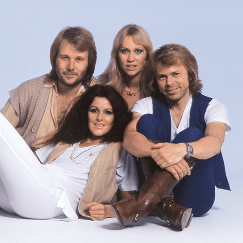

ABBA are a Swedish pop group formed in Stockholm in 1972 by Agnetha Fältskog, Björn Ulvaeus, Benny Andersson and Anni-Frid Lyngstad. The group's name is an acronym of the first letters of their first names. They became one of the most commercially successful acts in the history of popular music, topping the charts worldwide from 1974 to 1982. ABBA won the Eurovision Song Contest 1974 at The Dome in Brighton, UK, giving Sweden its first triumph in the contest. They are the most successful group to have taken part in the competition. Estimates of ABBA's total record sales are at least 400 million records worldwide, making them one of the best-selling music artists of all time.[4] They are the best-selling band from continental Europe, and also from outside the English-speaking world.[citation needed] ABBA are the first group from a non-English-speaking country to achieve consistent success in the charts of English-speaking countries, including the United Kingdom, Ireland, Canada, Australia, New Zealand, South Africa, and the United States. They have a joint record eight consecutive number-one albums in the UK.[6] The group also enjoyed significant success in Latin America, and recorded a collection of their hit songs in Spanish.
After ABBA disbanded in December 1982, Andersson and Ulvaeus achieved success writing music for the stage,[8][9] while Lyngstad and Fältskog pursued solo careers with mixed success. ABBA's music declined in popularity until the purchase of ABBA's catalogue and record company Polar by Polygram in 1989 enabled the groundwork to be laid for an international re-issue of all their original material and a new Greatest Hits (ABBA Gold) collection in September 1992, which became a worldwide bestseller. Several films, notably Muriel's Wedding (1994) and The Adventures of Priscilla, Queen of the Desert (1994), further revived interest in the group and spawned several tribute bands. In 1999, ABBA's music was adapted into the successful musical Mamma Mia! that toured worldwide. A film of the same name, released in 2008, became the highest-grossing film in the United Kingdom that year. A sequel, Mamma Mia! Here We Go Again, was released in 2018.